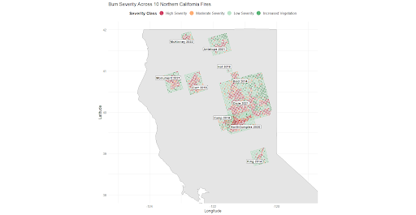
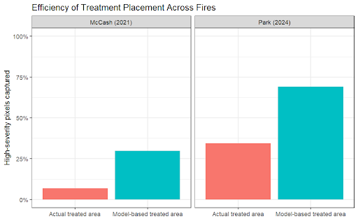

Wildfire Severity Modeling in Northern California
A data science project using geospatial environmental data and machine learning to explore where high-severity wildfire is most likely and how fuel treatments could be better targeted.
Project Overview
This group project focused on recent spikes in wildfire severity in northern California. We analyzed major wildfire events using environmental, climate, fuel, vegetation, topographic, and treatment data to better understand the conditions associated with high-severity fire.
The project developed two complementary modeling approaches: a spatial wildfire severity risk model to identify high-risk locations, and a fire regime classification framework to connect different landscape conditions with more appropriate fuel treatment strategies.
Problem
Wildfires in northern California are becoming more severe, costly, and difficult to manage. Long-term fire suppression has contributed to fuel buildup, while climate change has increased atmospheric dryness and fuel aridity. This creates a management problem: limited fuel treatment resources are not always aligned with the places and landscape conditions most likely to produce high-severity fire.
Data
The project combined multiple public geospatial datasets across ten major northern California wildfires from 2014–2022. Burn severity was measured using MTBS Relative differenced Normalized Burn Ratio (RdNBR). Environmental predictors included LANDFIRE fuel, vegetation, and topographic variables, PRISM climate data, and CAL FIRE fuel treatment data.
- Fire severity: MTBS RdNBR burn severity data
- Climate: PRISM precipitation, maximum temperature, and vapor pressure deficit
- Landscape: LANDFIRE fuel model, vegetation type, canopy cover, elevation, slope, and aspect
- Treatments: CAL FIRE fuel reduction project data
Methods
1. Spatial Severity Risk Model
We reframed wildfire severity as a binary classification problem, distinguishing high/moderate severity areas from low-severity or increased-vegetation areas. A Random Forest model was trained using environmental predictors such as vapor pressure deficit, temperature, precipitation, canopy cover, elevation, fuel model, and vegetation type.
2. Fire Regime Classification
We used HDBSCAN clustering to identify distinct fire regime groups based on pre-fire environmental conditions. These regimes helped connect different combinations of fuel, vegetation, and climate conditions to more targeted treatment strategies, such as prescribed fire, thinning, fuel breaks, or defensible space.
3. Model Validation and Treatment Simulation
The risk model was applied to independent wildfire events, including the McCash and Park fires. Predicted high-risk locations were compared with observed treatment placements to evaluate whether model-guided treatment allocation could capture more high-severity areas under the same resource constraints.
Key Results
- A Random Forest model was used to estimate the probability of high-severity wildfire conditions across northern California landscapes.
- Model-guided treatment placement captured a higher proportion of high-severity pixels than observed treatment locations in independent fire case studies.
- HDBSCAN clustering identified eleven distinct fire regimes based on fuel, vegetation, topography, and climate conditions.
- A supervised Random Forest model predicted fire regime membership with about 68% accuracy, suggesting that regime classifications could be generalized to new locations.
Example Visualizations


Recommendation
The final recommendation was a two-stage decision framework. First, land management agencies could use the wildfire severity risk model to identify areas with higher likelihood of severe fire. Then, they could use the fire regime classification framework to select treatment types that better match local fuel structure, vegetation, and climate conditions.
Takeaways
- Worked with real-world geospatial and environmental datasets
- Applied machine learning methods to a policy-relevant environmental problem
- Gained experience communicating technical results through a formal white paper
- Learned how model outputs can support decision-making, not just prediction